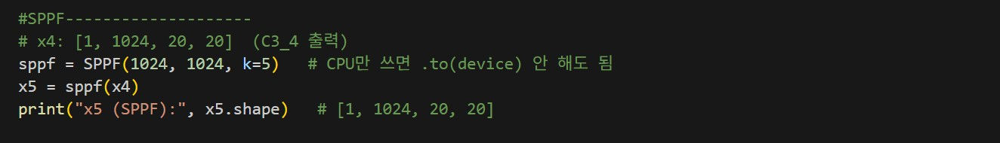

How it works

This is header for operating YOLO v5
//BACKBONE
Backbone is where image is inputted and analyze the image by pizels.
Fist we should get images from where it is stored.

This picture shows the first part of Backbone structure.
"img_path" indicates where the image is stored.
"img" indicates where yolo should get image from, and make the image by 640 X 640 pixels, change the image into 3 channels(images) by red, blue and green.
"transform to tensor" is the process that change the input image into tensor, which is the matrix of numbers. This helps image to be suitable to put into YOLO.
import torch, from PIL import Image, import torchvision.transforms as T these are headers that is needed for codes above.
Next you can see the first CBS block. Input_tensor is the result of previous process.
Convolution block consists of 3 layers. Conv2d, Batchnorm2d and Silu.
Number of input channels is 3 and number of output channels is 64, kernel size is 6.
Therefore the output of this block is [1 64 320 320]. It means Batch is 1, channels are 64, image size is 320X320.
The pixel size became half because stride is 2. This means the kernel moves by 2 pizels, which results in tensor that has pixels with half number of previous tensors.
import torch, import torch.nn as nn is needed as header. As the YOLO v5 structure, Next block is also CBS block.
After 2 CBS blocks, the Next block is C3 block. C3 block uses a structure called "bottle neck"
Bottleneck is processed like this.First the C3 block gets tensor.It reduces the channel in order to do fast calculation. After that the conv block makes deeper feature map. In the end, C3 block raises the channel of the feature map to the original number.
This makes deeper feature map.In addition, C3 block combines this feature map with original inputted tensor. This mehtod is good because it is faster and it enables more powerful feature map.
"n=3" means this block will do this bottleneck process 3 times.

This picture shows the structure of bottleneck. The RELU is an activation function which is used to make the model learn more complicated functions. Usually YOLO uses SILU instead as activation function.

we repeat the CBS block and C3 block. After one CBS block, the tensor gets twice higher channel and half of the previous pixel. After C3 block, nothing changes in number of channels and pixels.
After 5 CBS and 4 C3 blocks tensor ,which was 3 channels and 640X640 pixels in the fist place, changed into 1024 channels and 20X20 pixels.

The next block is SPPF block. SPPF is a fater version of original SPP block. This block consists of CBS, MAXPOOL, CONCAT layer.
First, tensors are inputted in this block. Then, tesors go through CBS block. After that, the tensor goes through MAXPOOL layer. MAXPOOL makes a new feature map by choosing the biggest number in certatin area.
This helps the model to reduce the noise as well as calculation. This helps model to recognize objects easily.
After processing 3 MAXPOOL layers, it combines(more apecifically concat) each results from each MAXPOOL layers. The result goes into CBS in the end.

This is the structure of SPP and SPPF. In SPPF, MAXPOOL layers are connected in a series shape, which makes the layer faster. It concats all 4 results from each maxpool layers. therefore the result tensor gets 4 times higher channel number.In CBS layer, the channel number is reduced to the original state.

This is the result of backbone. We started from one image and there are 1024 channels now.
//NECK
Neck is where you make more profound tensors. Neck consists of "Feature Fusion block"

This picture shows whole NECK.
The first block is feature fusion block. This block consists of 4 layers. convolution, upsampling, concatination and c3.
Fist, tensor is inputted into convolution layer. Convolution layer makes the channel into half. After that, it goes into upsampling layer. In this layer, the pixel of tensor changes from 20 to 40.
This enables the tensor to be combined with other tensor that have 40X40 pixel. After that, the tensor is combined with X3 tensor wich is [1, 512 ,40,40]. The X3 has 1 batch, 512 channels, 40X40 pixels.
After concatination, it becomes 1024 channels(512+512), 40X40 pixels. In the end C3 layer makes the tensor into [1,512,40,40] and make new feature map. The conv and c3 layers are brought by ultralytics using header from ultralytics.nn.modules import Conv and from ultralytics.nn.modules import C3
upsample layer is built in function at pytorch using header,import torch.nn as nn and torch.cat layer is a built in function in pytorch that only needs header,imprt torch
We repeat this Feature fusion block 4 times.
This neck process is actually combining different feature maps and making more profound and meaningful feature maps. First block combines X3 and X5 , Second one combiens h4(result of first block) and X2, third block combines h3(result of second block) and h4.
Fourth block combines X5 and m4(result of third block).

These are 1024 feature maps with 20X20 pixels each. These are the final result of bottleneck and neck process.
Remember these feature maps all started from just one image. and now it became 1024 feature maps.
Future usage
YOLO can be used everywhere. In cctv, autonomous vehicle, object detection is the basic of these technologies.
Future development
I am planning to improve my understanding about YOLO.